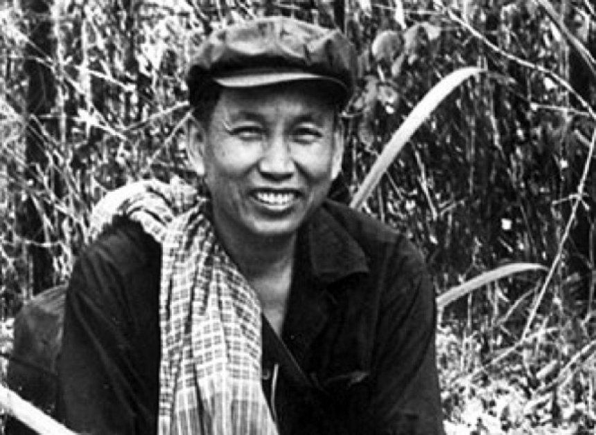

Tuesday, September the 5th, 2017
back to: title, date or indexes

The communist regimes of the last century threw up their fair share of monsters, among whom Pol Pot was one of the more demented. His Khmer Rouge came to power in Cambodia in 1976. By the time they were overthrown, three years later, around a quarter of the population had perished.
Pol Pot had a vision of a sort of peasant utopia. Accordingly, towns and cities were emptied and the people marched out into the countryside to work on collective farms. He had a particular animus towards “bourgeois intellectuals”, a group which apparently included anybody who wore glasses. Of course, surprise surprise, Pol Pot was such an “intellectual” himself. As a young man, he studied in Paris, from 1949 to 1953.
There is an instructive story from his time in France. Already the first glimmerings of his agrarian revolution were swirling around in Pol Pot's brain, and an associate suggested he ought to get out of Paris and investigate French farming methods. Pol Pot thus headed off, deep into rural France, and went to stay—uninvited—with a dairy farmer.
For a couple of days, the future tyrant followed the farmer about, observing him at work. This, it seemed, taught Pol Pot all he needed to know. On the third day, over breakfast, he launched into a Marxist critique of the farmer's age-old rustic ways. He could, he explained, order the cows to do exactly as they were told, just as he would go on to bend the people of Cambodia to his will. The wise old French farmer scoffed.
“You do not understand,” said Pol Pot, never short on self-belief, “Your cows will obey my every word. For I speak the language of cows!”
The farmer chuckled at the young Cambodian upstart, took a last sip of his breakfast brandy, and went out to his barn. He opened the doors, and the cows mooched off across his fields to munch grass.
At this point, Pol Pot appeared at his side. He announced that he would make all the cows return to the barn tout suite, simply by issuing a verbal diktat. He then uttered, at deafening volume, a strange guttural Cambodian cow incantation. To the farmer's astonishment, the cows ceased munching, looked up, and, at almost uncanny speed, charged across the fields and returned to the barn.
It was a classic case of Pot calling the cattle back.
Hooting Yard on the Air, November the 2nd, 2017 : “Mudguard” (starts around 07:31)